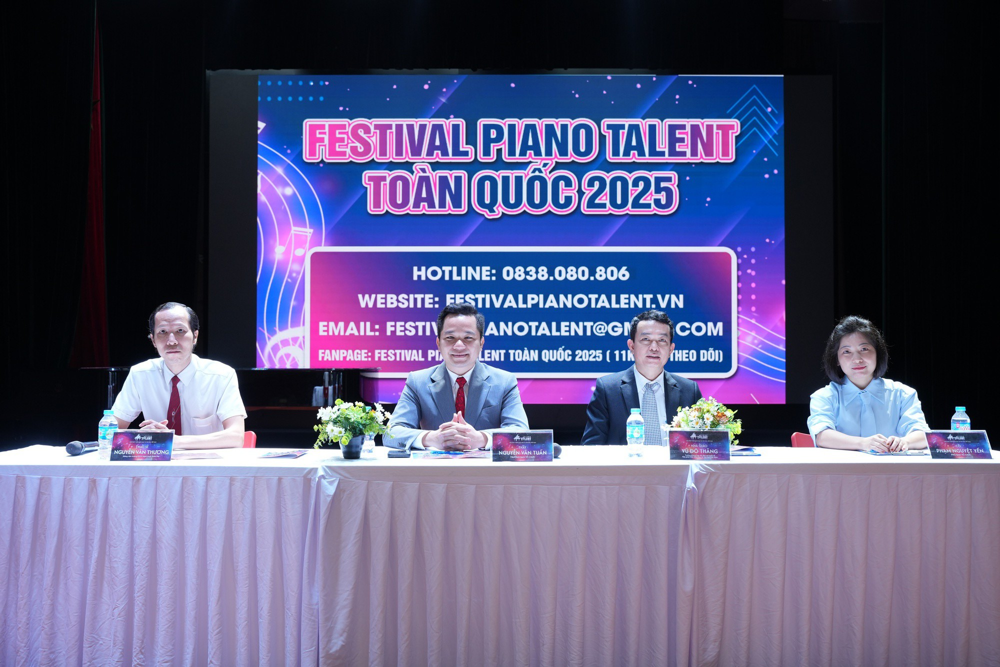

Ghế nóng Festival Piano Talent quy tụ nhiều nghệ sĩ nổi tiếng
Tiếp nối thành công của "Cuộc thi Piano mở rộng toàn quốc - Festival Piano Talent" mùa 1 diễn ra vào
năm 2024, Viện Phát triển Giáo dục và Văn hóa Việt Nam tiếp tục phối hợp cùng Cục Văn hoá cơ sở - Bộ
Văn hóa, Thể thao và Du lịch tổ chức mùa 2 cuộc thi.
Trong mùa giải đầu tiên, cuộc thi đã thu hút hơn 1.000 thí sinh tham gia trên cả nước, trong đó
có nhiều thí sinh đến từ các tỉnh xa như: Đăk lăk, Buôn Ma Thuột, Phan Thiết, Bình Thuận, Tiền Giang,
Cao Bằng, Lào Cai, Lạng Sơn… Không chỉ được đánh giá cao về quy mô, "Cuộc thi Piano mở rộng toàn quốc
2024" còn nhận được phản hồi tích cực từ giới chuyên môn, phụ huynh, thí sinh về chất lượng, uy tín cuộc
thi.
Tại mùa 2, bên cạnh các bảng thi đấu quen thuộc, ban tổ chức quyết định mở thêm bảng Nghệ sĩ dành cho
những thí sinh đã đoạt giải thưởng tại mùa 1, cũng như các sinh viên, học sinh đang theo học piano
chuyên nghiệp. Theo dự kiến, mùa giải 2025 sẽ thu hút 2.000 thí sinh trên khắp cả nước tham gia

Thành viên ban tổ chức chia sẻ trong buổi khởi động mùa 2.
Ông Nguyễn Văn Tuấn - Chủ tịch Viện Phát triển giáo dục và văn hóa Việt Nam, Trưởng ban tổ chức cuộc thi
cho biết: "Để tạo điều kiện cho nhiều thí sinh có cơ hội thể hiện tài năng trực tiếp trên sân khấu,
chúng tôi quyết định lấy số lượng thí sinh vào vòng Bán kết nhiều hơn mùa 1.
Ngoài ra, kết thúc cuộc thi, ban tổ chức sẽ phối hợp với các tổ chức giáo dục trong nước và ngoài nước
tổ chức nhiều chương trình hòa nhạc nhỏ, talkshow, trại hè âm nhạc quốc tế… để các thí sinh có cơ hội
giao lưu học hỏi phát triển tài năng".
Cuộc thi Piano mở rộng toàn quốc 2025 dành cho lứa tuổi từ 5-19, được tổ chức rộng khắp toàn quốc, được
chia thành 10 bảng theo độ tuổi với 3 thể loại: Tự do, Classic, Nghệ sĩ.
Vòng bán kết - vòng tỏa sáng sẽ được tổ chức tại 3 khu vực: Miền Nam tại Nhạc viện thành phố Hồ Chí Minh
(ngày 1 và 2-3-2025); Miền Trung tại Học viện Âm nhạc Huế (ngày 8 và 9-3-2025); Miền Bắc tại Học viện Âm
nhạc quốc gia Việt Nam (ngày 15 và 16-3-2025).
Vòng chung kết và gala sẽ diễn ra ngày 29 và 30-3-2025 tại Phòng hòa nhạc lớn, Học viện Âm nhạc quốc gia
Việt Nam.
Các thí sinh sẽ trải qua 3 vòng: Vòng tìm kiếm tài năng nhận hồ sơ tham dự trực tuyến từ ngày 1 đến 30-1-2025.
Thành viên bn giám khảo gồm: Tiến sĩ Đào Trọng Tuyên, Trưởng khoa Piano - Học viện Âm nhạc Quốc gia Việt
Nam, NSND Phạm Ngọc Khôi, nghệ sĩ Minh Lệ, nghệ sĩ Trần Viết Bảo, NSND Trung Hiếu..
Ngoài huy chương vàng, bạc, đồng các thí sinh sẽ nhận được giấy chứng nhận, cúp vàng.